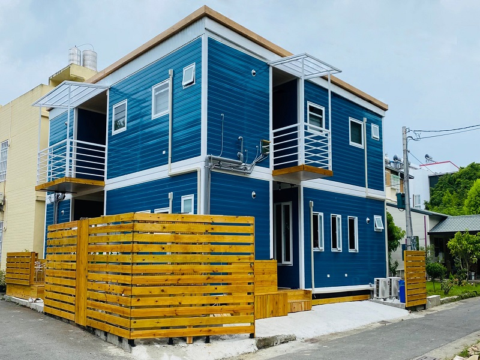
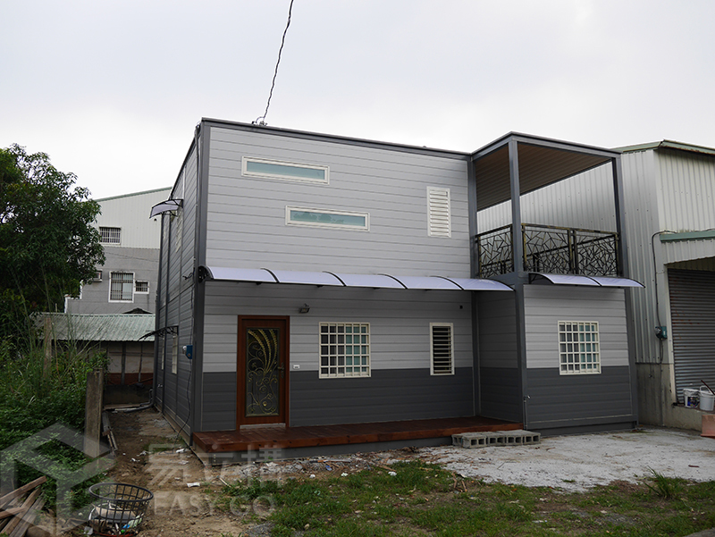
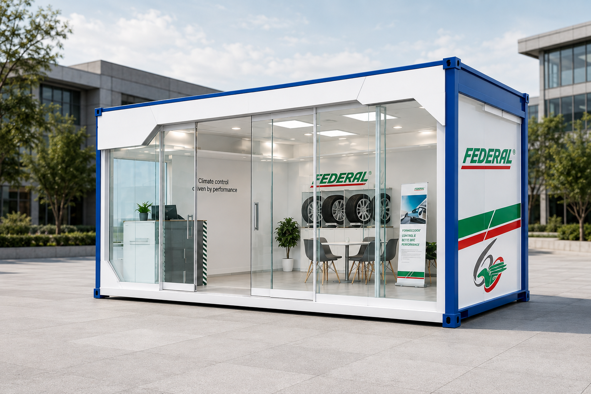

首頁 / 空間，承載不同日常。
SELECTED SPACES
住宅、休憩、工作或商業，從使用需求出發，找到適合自己的尺度。
顯示 4 個空間提案
日常住宅 · 空間提案

休憩空間 · 空間提案

獨立工作室 · 空間提案

商業展示空間 · 空間提案
官方素材照片搭配用途提案；並非已核實案名、面積與施工資料的完工案例。
以露台、戶外動線與上下舖配置，回應多人居住的日常需要。
藍色外觀、挑空起居與木質臥房，讓生活擁有明確而自在的層次。
從起居、備餐到露台配置，規劃獨立而有彈性的使用空間。
以通透玻璃立面串聯展示與接待，打造靈活的品牌體驗空間。
START WITH A CONVERSATION
FROM STRUCTURE TO POSSIBILITY.